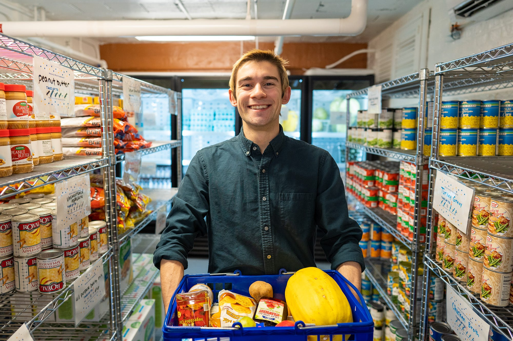
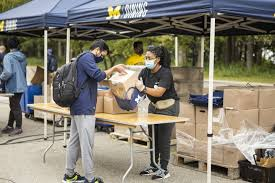
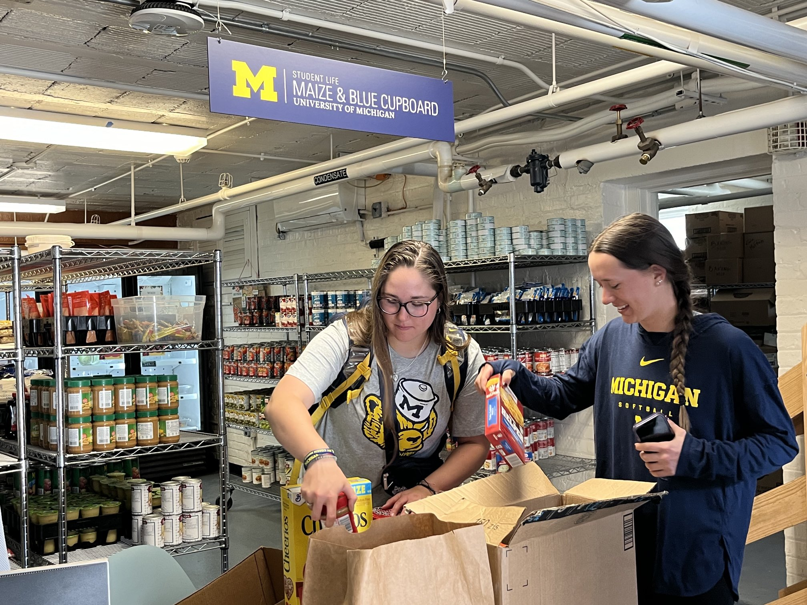

About the Maize and Blue Cupboard
The Maize and Blue Cupboard addresses food insecurity among University of Michigan students by providing access to free, nutritious food and educational resources. Their mission is to ensure no student has to choose between their education and a healthy meal.
Services Offered
- Food Pantry Access: Free access to a wide variety of nutritious food options for all students.
- Food Distribution Events: Regular events featuring fresh produce and pantry staples.
- Volunteer Opportunities: Get involved by volunteering to support your fellow students.
 Nutrition Education: Workshops and resources on budgeting, meal prep, and healthy eating.
Nutrition Education: Workshops and resources on budgeting, meal prep, and healthy eating.
How to Use the Food Pantry
- Make an appointment online.
- Bring your MCard for access to services.
- Fill out a brief intake form if it's your first visit.
- Select items based on your personal needs.
Volunteer with MBC
Volunteers are vital to the success of Maize and Blue Cupboard. Help the Cupboard stock shelves, organize food drives, or host educational workshops. Learn more and sign up to volunteer.
Frequently Asked Questions
- Who can use the Maize and Blue Cupboard? Any student with a valid MCard.
- When is the Maize and Blue Cupboard open? Shopping at the Maize and Blue Cupboard is by appointment only. Their hours of operation are:
- Sunday: 2pm-6pm
- Monday to Thursday: 3pm-7pm
- Friday: 12pm-7pm
- Saturday: Closed
- How often can I visit? Students can visit as often as needed.
- What types of food are available? A rotating mix of non-perishable items, fresh produce, and frozen options are available.